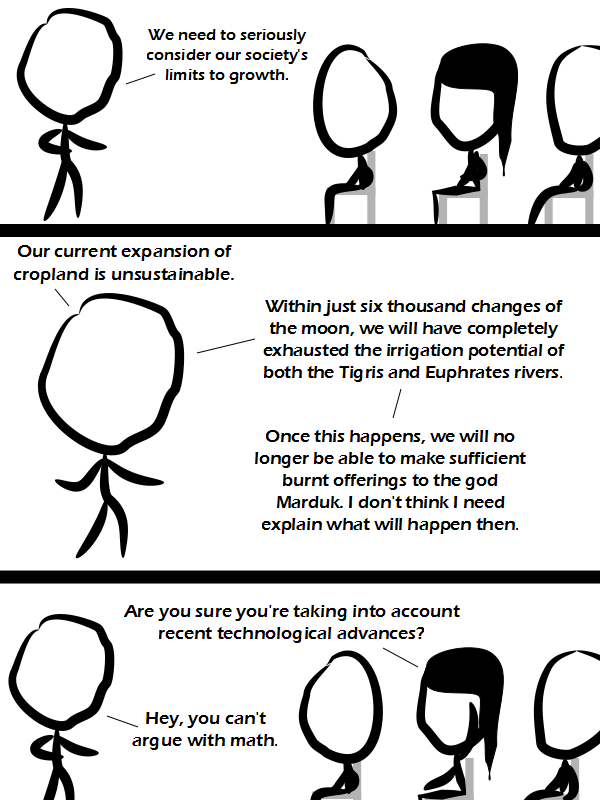

Comic JK 885
When I Feel Like It
⇤
<
?
>
⇥

⇤
<
?
>
⇥
Forum
.
RSS
.
Digg
.
Facebook
.
Reddit
.
Twitter
.
Stumbleupon
Enter your thoughts on number 885 here. Please, no spamming, trolling, phreaking, or translating Malthus into Babylonian. Malthus was surprisingly unoriginal. So are neo-Malthusians really neo-neo-Babylonians? >You mean Akkadian. >>Arquillian? >>>battle-cruiser? >>>battle crullers? The concept of economic growth is as parochial to us as irrigation was to ancient babylon. One might say... we'll grow out of it. Everyone's looking a bit wobbly today. >The artists has lost his ability to draw straight circles... Someones's forgotten to changes their close. >>Maybe the guy is wobbly because he's four thousand years old We have globalized food now, and the poorest nations are already starving because of it. Many people are just shielded from knowing the full extent of global starvation. >How does globalized food cause global starvation? >> It doesn't. It means that, rather than having the poor in every region starve, we have the poorest nations starve their entire populations while the affluent nations plug their ears and pretend everything is ok. >>> What would be a more responsible action by affluent nations? >>>> Stop importing the majority of their food, for one.. although this only applies to some nations. >>>>> It's not like wealthy countries are sending in armies and forcefully removing crops from foreign lands. Maybe poor countries are selling their food too cheap? >>>>>> You watch Fox News, don't you? What the hell do you think wars are about if they aren't about food and other resources???? >>>>>>> No, I don't. Stay on topic. >>>>>> Mercantilism is an over-applied philosophy. It explains Iraq's invasion of Kuwait, but is inadequate to explain America's response. A country's raw materials can be purchased just fine on the open market by industrial nations. War by first world nations against those which sell raw materials is about power. There are two ways to be powerful; have a reasonably free market (no less free than, say, China) or sell raw materials. The problem is that a powerful nation with nukes is a potential threat/power and entities like the CIA see everything in terms of power relations. >>>>> Actually, if occidental countries weren't subsidizing their agricultural so much, they WOULD import more, and at a higher price, allowing what was the Third World to take a place as the world granary... that is until their living standards rises. We, consumer, would (might) have back the purchasing power we would lost by higher costs, because less subsidizes means (normally) less taxes (in a perfect world). >>>>>> This sounds like a good thing... what am I missing? Western society is bad. What can we add to support this idea? SPAAAAAAAAAAAAAAAAAAAAAAAAAAAAACE! -------------------- I wish to submit a size enhancement for this comment box: In comic.php: <input type="hidden" name="loadtime" value="<?php echo time() >"> In comment_box.php: if (loadtime > last_edit_time): save_comment_box() save_last_edit_time() else: echo "Oops, someone submitted their comment before you did. If you saved now their changes could be lost. Here is the content you submitted so that you don't whine about how you lost your wonderful your mother joke" echo "<textarea> $commentbox_text </textarea>"; echo "now copy your relevant stuff, go back, reload the page and paste it at the bottom. Or not. Whatever."; --- By the way there is a quotation mark missing in this page after onBlur="limitText(this,6000); >>>> Too much javascript. LOL every time I try to post a comment, the page redirects over to xkcd. > Including that time? > It does that if you try to delete most of the content or include the letters ht-tp. >> Or type excessive comments about how much you and I love your mother. http (They fixed that).... >It's "http:[double slash]" now. No, not that time ... btw I didn't try to delete anyone's comments, didn't break http, but I WAS including a URL. Maybe that's what was doing it. It even did it from a mobile device, when I tried that. Anywhoof... btw, I WAS going to say ... "If you moved every American (all 311,591,917 of them) into only Florida, California and Texas, you would have a population density of 6253 people per square mile, which is more comfortable than any city on this list (and most states)" ... then I included a link to a list of populous cities :). I also think it's cool that you can usually tell who is speaking in this box, by context, without identity indicators. :) >There's a couple personalities stand out to me, but I don't know how specific I could get.